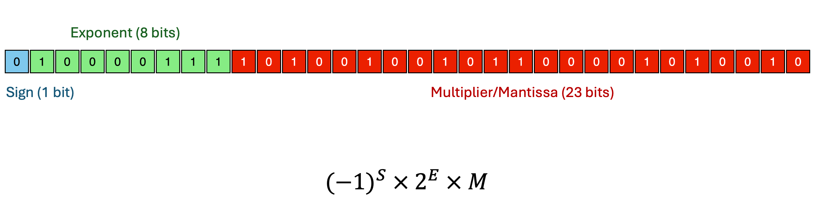

GCSE Link: 3.02 (Binary and Hexadecimal)
You should already be familiar with standard form, m × 10x, where
m is a multiplier between 1 and 10, and x is an integer exponent. Standard
form is a much more concise way of writing very large and very small numbers.
Also, multiplication and division can be a lot easier with standard form. For example, lets say a physicist wants to work out how far a beam of light travels in 2.5 milliseconds. That is, he wants to multiply the speed of light, 300 million metres per seconds, by 2.5 thousandths of a second.
With standard form, this task is astonishingly easy. We need to do the calculation
(3 × 108) × (2.5 × 10-3), which is clearly
7.5 × 105.
This conciseness and ease of calculations is the basis of Floating Point Representation. The only
difference is that because computers use binary, we use m × 2x instead.
 Floating Point Representation is a more efficient way of representing fractions in binary.
Floating Point Representation is a more efficient way of representing fractions in binary.
In a single-precision (32-bit) floating point number, we use 1 sign bit (+ or -), then 8 exponent bits
(signed integer between -128 and +127), then 23 multiplier (mantissa) bits (fractional number between 1
and 2). This allows us to represent any number between -2127 and
+2127 with around 8 significant figures of precision. This is so much more
efficient than Fixed Point Representation!
Diagram 1 shows the bits in a single-precision floating point number.
 Diagram 1
Diagram 1

Note: this is beyond A Level, but a fun fact is that the mantissa actually stores a number between 0 and 1, not 1 and 2. We can drop the leading 1 because it is always there, and then add 1 when multiplying. This allows us another bit of precision in the multiplier.
The reason we're able to store such a large range of numbers is because with floating point we only care about significant figures, not decimal places. This is good because we don't really care about decimal places for extremely large numbers.
Note that there is also a double-precision format, which uses 64 bits instead of 32. This gives around 16 significant figures of precision. This is the format that most programming languages have today.
 Can 0.3 be stored exactly in binary?
Can 0.3 be stored exactly in binary?
No - any fraction which doesn't have a power of 2 in the denominator is recurring in binary. Since
0.3 is 3/10, and 10 is not a power of two, it can never be stored exactly (it is 0.0100110011...).
In the single-precision floating-point format, the closest value to 0.3 is 0.3000000119...